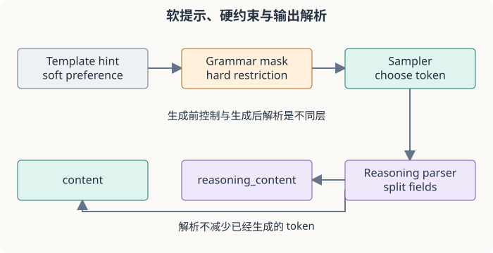
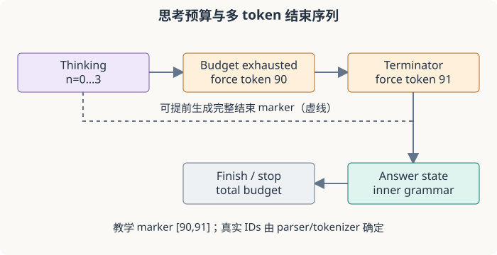

第 49 章 · SGLang 服务生命周期
Reasoning Control：Thinking Budget、Reasoning Parser 与 Grammar 状态
怎样区分提示模型少思考、强制 token budget、结构化答案和输出解析？
怎样区分提示模型少思考、强制 token budget、结构化答案和输出解析？ 从具体反例出发，连接算法、工程接口和验收边界。
1. 三个层次不能混淆
Chat template hints（enable_thinking、thinking_budget、reasoning_effort）只能引导模型，模板忽略变量时没有效果。Strict thinking 在生成前改变 vocabulary mask，约束 token 选择。Reasoning Parser 在输出后拆分 reasoning_content 和 content，不会减少已生成 tokens 或计算。Custom logit processor 是另一路生成控制。

2. 状态机：Thinking → Terminator → Answer
ReasonerGrammarObject.maybe_init_reasoning 决定初态；think_end_ids 从配置 parser/tokenizer 得到，可能多 token。TokenSequenceMatcher 跟踪结束 marker 的部分匹配，完成后进入 generation，适用 final-answer grammar；部分模型允许自开 reasoning、tool start 结束 reasoning，或 grammar 本身覆盖 thinking。不能把所有模型硬编码为一对标签。
3. 预算和结束符不是同一计数
源码 _can_think_more 检查 max_think_tokens<0 或 tokens_in_think + matched_think_end_tokens < max_think_tokens；当耗尽时 filter 允许当前结束序列的下一个 token。教学 B=3，已经产生3个普通 thinking tokens，结束序列 [90,91]，依次强制90、91再转 answer。max_new_tokens 是全输出预算，需要为 marker 和答案留空间；不保证总能生成完整答案。
4. Grammar 的交集与边界
常见 reasoning wrapper 在 thinking phase 延迟 final schema，answer phase 启用内层 grammar；若 reasoning 本身属于 grammar（reasoning_in_grammar），strict filters 只能缩小现有允许集合，不能扩大它。当结束 token 被原 grammar 禁止时，不能宣称强制结束覆盖其约束。Rollback speculative tokens 时 matcher、phase 和 grammar state 必须同步回退。

5. 原生与 OpenAI 兼容接口
固定文档：native /generate 传 require_reasoning:true 和 max_thinking_tokens，未启用 strict thinking 的 server 会拒绝 budget；require_reasoning 缺失会令 native grammar 从 generation 开始而忽略 budget。Chat completions 用 custom_params.thinking_budget，chat path 根据 thinking mode 设置 require_reasoning。启动需 --enable-strict-thinking、适用 --reasoning-parser 及支持 token filtering 的 grammar backend。
6. Parser 增量拆分与 custom processor
BaseReasoningFormatDetector 支持 streaming/non-streaming reasoning、partial tags holdback 和部分模型的 tool marker interruption。若收到片段 'abc</thi' 与 'nk>答'，需保留 partial marker，最后只把 abc 归 reasoning、答归 content。Custom processor 可强制换行再结束 marker，built-in IDs 必须匹配 tokenizer；不把它等价成 grammar 的精确计数，也不向不可信客户端开放可执行扩展。
7. 验证质量与推理成本
统计真实 thinking tokens、terminator tokens、answer tokens、finish reason、schema validity、accuracy 与延迟。固定模板和 parser，在 B=0/小预算/大预算、提前结束、多 token marker、stop/max_new_tokens 截断及 speculative rollback 下检查。语法正确不代表推理正确；减少思考 tokens 可能降低任务质量，选择 budget 需质量—时延 Pareto 实测。
8. 交互：选择机制状态与反例
Reasoning Control 教学实验
Thinking：B=3；生成3个普通 thinking tokens，尚未结束。
强制结束：结束序列为 [90,91]；依次允许对应 token，不再接受普通 thinking token。
Answer：完整 marker 后进入 answer；由 schema/grammar 限制最终答案，仍受 max_new_tokens 约束。
教学模型仅验证机制与反例，不代表真实 GPU 或集群 benchmark。
9. CPU 最小实验
下载 reasoning_budget.py，使用标准库运行。源文件包含确定性输出及正反例断言。
python3 examples/reasoning_budget.py实验是教学抽象，不执行实际模型、网络传输、GPU kernels 或 Kubernetes 部署。
10. 源码阅读路线与证据
固定上游快照 b323e8e6e3aacfe606b11a2ef51ae73bc8b283a7，区分当前实现、工程建议和教学推导。
- Chat-template hints / Hard budget with strict thinking：Template hints are soft; strict thinking enforces budget through grammar filtering with configured reasoning parser.
- Native /generate API / OpenAI chat completions API：Native budget requires require_reasoning; chat custom_params.thinking_budget is mapped through the chat path.
- ReasonerGrammarObject initialization and transfer_state：Token-sequence matcher tracks phase transitions and optional inner grammar framing.
- _can_think_more / fill_vocab_mask：Budget includes partial end-marker progress; filtering can narrow grammar masks and forces terminator sequence when budget exhausted.
- BaseReasoningFormatDetector.parse_streaming_increment：Parser buffers partial delimiters and separates reasoning from normal content, with optional tool-start interruption.
- ThinkingBudgetLogitProcessor：Built-in custom processors implement model-specific IDs and forced ending; distinct from grammar control.
前置章节：第 26 章 · 第 27 章 · 第 28 章 · 第 40 章 · 第 46 章 · 第 48 章。证据清单。